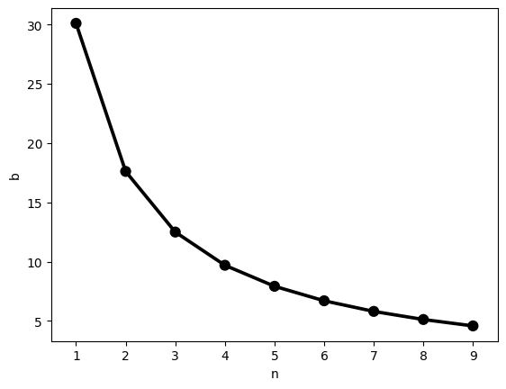
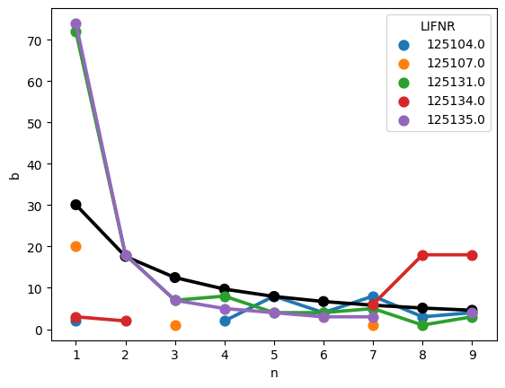
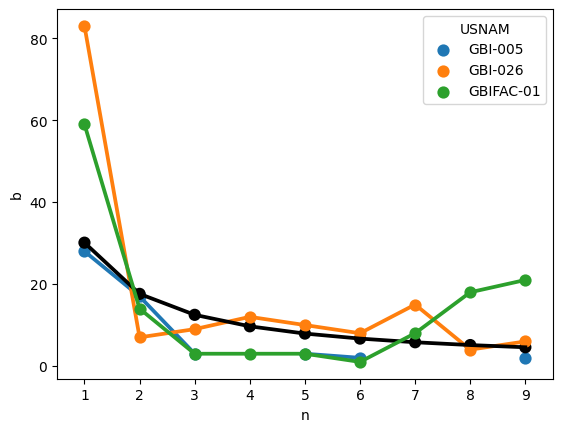
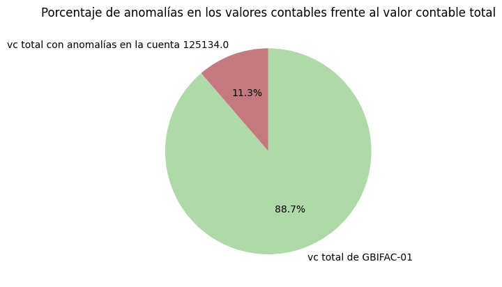

# Importar
import pandas as pd
import math
import matplotlib.pyplot as plt
%matplotlib inline
import seaborn as sns
import warnings
warnings.filterwarnings('ignore')Algo extraño sucede en el departamento de contabilidad… 👻
Resumen:
En el presente cuaderno se aplica el análisis de Benford a documentos contables previamente procesados. Esto con el fin de investigar la veracidad de una supuesta manipulación de datos en transacciones financieras con proveedores.
Objetivos:
- Analizar tablas SAP.
- Procesar documentos contables.
- Aplicar análisis de Benford.
- Visualizar resultados.
- Encontrar un culpable.
Importar librerías, utilidades y cargar datos
Para este cuaderno, hay dos tablas descargadas del sistema SAP:
- BSEG.csv: Almacena los detalles de las transacciones contables.
- BKPF.csv: Almacena los registros principales de los documentos contables.
# Cargar datos
bseg = pd.read_csv('./datos/BSEG.csv', low_memory=False)
bkpf = pd.read_csv('./datos/BKPF.csv', low_memory=False)Ambas tablas contienen varias columnas.
bseg.columnsIndex(['Unnamed: 0', 'MANDT', 'BUKRS', 'BELNR', 'GJAHR', 'BUZEI', 'BUZID',
'AUGDT', 'AUGCP', 'AUGBL',
...
'PEROP_END', 'FASTPAY', 'IGNR_IVREF', 'FMFGUS_KEY', 'FMXDOCNR',
'FMXYEAR', 'FMXDOCLN', 'FMXZEKKN', 'PRODPER', 'RECRF'],
dtype='object', length=337)bkpf.columnsIndex(['Unnamed: 0', 'MANDT', 'BUKRS', 'BELNR', 'GJAHR', 'BLART', 'BLDAT',
'BUDAT', 'MONAT', 'CPUDT',
...
'SSBLK', 'BATCH', 'SNAME', 'SAMPLED', 'EXCLUDE_FLAG', 'BLIND',
'OFFSET_STATUS', 'OFFSET_REFER_DAT', 'PENRC', 'KNUMV'],
dtype='object', length=114)BKPF
Sin embargo, de BKPF, solo son necesarias las siguientes columnas:
BELNR- El número del documento contable.BLART- El tipo de documento.USNAM- El usuario contador que registró el documento.
# Reducir el DataFrame a las columnas de interés
bkpf = bkpf.loc[:, ['BELNR', 'BLART', 'USNAM']]# Obtener una muestra replicable y aleatoria de 10 filas
bkpf.sample(10, random_state=456)| BELNR | BLART | USNAM | |
|---|---|---|---|
| 887 | 4900000573 | WA | BOETTCHER |
| 1183 | 4900000869 | WA | BOETTCHER |
| 2547 | 5000000184 | WE | GBIFAC-01 |
| 690 | 4900000376 | WA | BOETTCHER |
| 1280 | 4900000966 | WA | BOETTCHER |
| 19 | 1500000013 | KZ | GBI-005 |
| 2778 | 5000000415 | WE | GBI-005 |
| 2266 | 4900001952 | WA | BOETTCHER |
| 1013 | 4900000699 | WA | BOETTCHER |
| 3262 | 1500000304 | KZ | GBIFAC-01 |
# Obtener los valores únicos de la columna 'BLART'
bkpf['BLART'].unique()array(['RV', 'DZ', 'KZ', 'KG', 'WA', 'WL', 'WE', 'RE'], dtype=object)El tipo de documento relevante aquí es KZ, que representa los pagos a los proveedores.
# Filtrar solo el tipo de documento 'KZ'
bkpf = bkpf[bkpf['BLART']=='KZ']bkpf.head()| BELNR | BLART | USNAM | |
|---|---|---|---|
| 6 | 1500000000 | KZ | GBI-005 |
| 7 | 1500000001 | KZ | GBI-005 |
| 8 | 1500000002 | KZ | GBI-005 |
| 9 | 1500000003 | KZ | GBI-005 |
| 10 | 1500000004 | KZ | GBI-005 |
El DataFrame final consta de información sobre los pagos a proveedores. Específicamente, el número del documento y el contador que lo registró.
BSEG
De esta tabla solo importan las siguientes columnas:
BELNR- El número del documento contable.BSCHL- La clave de contabilización.WRBTR- El valor monetario o valor contable.LIFNR- La cuenta del proveedor.
# Reducir el DataFrame a las columnas de interés
bseg = bseg.loc[:, ['BELNR', 'BSCHL', 'WRBTR', 'LIFNR']]# Obtener una muestra replicable y aleatoria de 10 filas
bseg.sample(10, random_state=456)| BELNR | BSCHL | WRBTR | LIFNR | |
|---|---|---|---|---|
| 559 | 1.500000e+09 | 25 | 1,000.00 | 125131.0 |
| 235 | 1.500000e+09 | 50 | 5 | NaN |
| 619 | 1.700000e+09 | 35 | 1,960,000.00 | 125088.0 |
| 32 | 1.500000e+09 | 50 | 1,010,000.00 | NaN |
| 2737 | 1.500000e+09 | 50 | 1927.48 | NaN |
| 425 | 1.500000e+09 | 50 | 1,000,000.00 | NaN |
| 2527 | 5.105600e+09 | 31 | 96,000.00 | 125108.0 |
| 2808 | 1.500000e+09 | 25 | 1,000.00 | 125107.0 |
| 943 | 5.000000e+09 | 96 | 63,830.00 | 125018.0 |
| 557 | 1.500000e+09 | 25 | 1,000.00 | 125131.0 |
# Obtener los valores únicos de la columna 'BSCHL'
bseg['BSCHL'].unique()array([50, 25, 40, 35, 89, 96, 86, 99, 81, 91, 31, 83, 93, 21])La clave de contabilización relevante aquí es 25, que representa un registro contable de débito en la cuenta de proveedor, lo que significa que se ha realizado una compra o un gasto con el proveedor.
# Filtrar solo la clave de contabilización '25'
bseg = bseg[bseg['BSCHL']==25]# Ver el tipo de dato de las columnas
bseg.dtypesBELNR float64
BSCHL int64
WRBTR object
LIFNR float64
dtype: object# Eliminar la separación de miles en 'WRBTR'
bseg['WRBTR'] = bseg['WRBTR'].str.replace(',', '')bseg.head()| BELNR | BSCHL | WRBTR | LIFNR | |
|---|---|---|---|---|
| 1 | 1.500000e+09 | 25 | 213710.00 | 125131.0 |
| 3 | 1.500000e+09 | 25 | 1068550.00 | 125131.0 |
| 5 | 1.500000e+09 | 25 | 933153.41 | 125135.0 |
| 7 | 1.500000e+09 | 25 | 1050.00 | 125135.0 |
| 9 | 1.500000e+09 | 25 | 30300.00 | 125131.0 |
El DataFrame final consta de información sobre los gastos con proveedores. Específicamente, el número del documento, el valor contable y la cuenta del proveedor al que se le depositó.
Pero eso no es todo…
Obtener el primer dígito del valor contable
# ...y crear una nueva columna con él:
bseg['FIRST'] = bseg['WRBTR'].str[0:1].astype(int)
bseg['FIRST']1 2
3 1
5 9
7 1
9 3
..
2802 1
2804 1
2806 1
2808 1
2810 1
Name: FIRST, Length: 353, dtype: int64Esto será útil más adelante.
Seleccionar solo los proveedores con más de 20 documentos
# ¿Cuántos documentos hay por proveedor?
vendors = bseg.groupby('LIFNR').size().sort_values(ascending=False)
vendorsLIFNR
125131.0 122
125135.0 118
125134.0 47
125104.0 31
125107.0 22
125105.0 4
125121.0 3
125000.0 1
125014.0 1
125070.0 1
125098.0 1
125101.0 1
125127.0 1
dtype: int64# Filtrar los proveedores con más de 20 documentos
vendors = vendors[vendors > 20]
vendorsLIFNR
125131.0 122
125135.0 118
125134.0 47
125104.0 31
125107.0 22
dtype: int64vendors.indexIndex([125131.0, 125135.0, 125134.0, 125104.0, 125107.0], dtype='float64', name='LIFNR')# Seleccionar proveedores de interés
bseg = bseg[bseg['LIFNR'].isin(vendors.index)]bseg.head()| BELNR | BSCHL | WRBTR | LIFNR | FIRST | |
|---|---|---|---|---|---|
| 1 | 1.500000e+09 | 25 | 213710.00 | 125131.0 | 2 |
| 3 | 1.500000e+09 | 25 | 1068550.00 | 125131.0 | 1 |
| 5 | 1.500000e+09 | 25 | 933153.41 | 125135.0 | 9 |
| 7 | 1.500000e+09 | 25 | 1050.00 | 125135.0 | 1 |
| 9 | 1.500000e+09 | 25 | 30300.00 | 125131.0 | 3 |
Integrar DataFrames y crear variables para el análisis Benford
# Integrar ambas tablas utilizando la columna 'BELNR' (número del doc. contable) como clave primaria
vc = pd.merge(bseg, bkpf, how='left', on='BELNR')
vc| BELNR | BSCHL | WRBTR | LIFNR | FIRST | BLART | USNAM | |
|---|---|---|---|---|---|---|---|
| 0 | 1.500000e+09 | 25 | 213710.00 | 125131.0 | 2 | KZ | GBI-005 |
| 1 | 1.500000e+09 | 25 | 1068550.00 | 125131.0 | 1 | KZ | GBI-005 |
| 2 | 1.500000e+09 | 25 | 933153.41 | 125135.0 | 9 | KZ | GBI-005 |
| 3 | 1.500000e+09 | 25 | 1050.00 | 125135.0 | 1 | KZ | GBI-005 |
| 4 | 1.500000e+09 | 25 | 30300.00 | 125131.0 | 3 | KZ | GBI-005 |
| ... | ... | ... | ... | ... | ... | ... | ... |
| 335 | 1.500000e+09 | 25 | 1000.00 | 125107.0 | 1 | KZ | GBIFAC-01 |
| 336 | 1.500000e+09 | 25 | 1000.00 | 125107.0 | 1 | KZ | GBIFAC-01 |
| 337 | 1.500000e+09 | 25 | 1000.00 | 125107.0 | 1 | KZ | GBIFAC-01 |
| 338 | 1.500000e+09 | 25 | 1000.00 | 125107.0 | 1 | KZ | GBIFAC-01 |
| 339 | 1.500000e+09 | 25 | 1000.00 | 125131.0 | 1 | NaN | NaN |
340 rows × 7 columns
Crear variables - La ley de Benford
'''
Contar el número de veces que aparece cada combinación única de valores en 'FIRST' y 'LIFNR'
en el DataFrame vc y crear un nuevo DataFrame llamado ben_vc_vendor que resuma esa información.
'''
ben_vc_vendor = vc.groupby(['FIRST', 'LIFNR'])['FIRST'].count().reset_index(name='COUNT')
ben_vc_vendor| FIRST | LIFNR | COUNT | |
|---|---|---|---|
| 0 | 1 | 125104.0 | 2 |
| 1 | 1 | 125107.0 | 20 |
| 2 | 1 | 125131.0 | 72 |
| 3 | 1 | 125134.0 | 3 |
| 4 | 1 | 125135.0 | 74 |
| 5 | 2 | 125131.0 | 18 |
| 6 | 2 | 125134.0 | 2 |
| 7 | 2 | 125135.0 | 18 |
| 8 | 3 | 125107.0 | 1 |
| 9 | 3 | 125131.0 | 7 |
| 10 | 3 | 125135.0 | 7 |
| 11 | 4 | 125104.0 | 2 |
| 12 | 4 | 125131.0 | 8 |
| 13 | 4 | 125135.0 | 5 |
| 14 | 5 | 125104.0 | 8 |
| 15 | 5 | 125131.0 | 4 |
| 16 | 5 | 125135.0 | 4 |
| 17 | 6 | 125104.0 | 4 |
| 18 | 6 | 125131.0 | 4 |
| 19 | 6 | 125135.0 | 3 |
| 20 | 7 | 125104.0 | 8 |
| 21 | 7 | 125107.0 | 1 |
| 22 | 7 | 125131.0 | 5 |
| 23 | 7 | 125134.0 | 6 |
| 24 | 7 | 125135.0 | 3 |
| 25 | 8 | 125104.0 | 3 |
| 26 | 8 | 125131.0 | 1 |
| 27 | 8 | 125134.0 | 18 |
| 28 | 9 | 125104.0 | 4 |
| 29 | 9 | 125131.0 | 3 |
| 30 | 9 | 125134.0 | 18 |
| 31 | 9 | 125135.0 | 4 |
De este modo se obtiene la cantidad de veces (COUNT) que el primer dígito del valor contable (FIRST) se repite para cada proveedor (LIFNR).
'''
Contar el número de veces que aparece cada combinación única de valores en 'FIRST' y 'USNAM'
en el DataFrame vc y crear un nuevo DataFrame llamado ben_vc_vendor que resuma esa información.
'''
ben_vc_accountant = vc.groupby(['FIRST', 'USNAM'])['FIRST'].count().reset_index(name='COUNT')
ben_vc_accountant| FIRST | USNAM | COUNT | |
|---|---|---|---|
| 0 | 1 | GBI-005 | 28 |
| 1 | 1 | GBI-026 | 83 |
| 2 | 1 | GBIFAC-01 | 59 |
| 3 | 2 | GBI-005 | 17 |
| 4 | 2 | GBI-026 | 7 |
| 5 | 2 | GBIFAC-01 | 14 |
| 6 | 3 | GBI-005 | 3 |
| 7 | 3 | GBI-026 | 9 |
| 8 | 3 | GBIFAC-01 | 3 |
| 9 | 4 | GBI-026 | 12 |
| 10 | 4 | GBIFAC-01 | 3 |
| 11 | 5 | GBI-005 | 3 |
| 12 | 5 | GBI-026 | 10 |
| 13 | 5 | GBIFAC-01 | 3 |
| 14 | 6 | GBI-005 | 2 |
| 15 | 6 | GBI-026 | 8 |
| 16 | 6 | GBIFAC-01 | 1 |
| 17 | 7 | GBI-026 | 15 |
| 18 | 7 | GBIFAC-01 | 8 |
| 19 | 8 | GBI-026 | 4 |
| 20 | 8 | GBIFAC-01 | 18 |
| 21 | 9 | GBI-005 | 2 |
| 22 | 9 | GBI-026 | 6 |
| 23 | 9 | GBIFAC-01 | 21 |
De este modo se obtiene la cantidad de veces (COUNT) que el primer dígito del valor contable (FIRST) se repite para cada contador (USNAM).
Análisis de Benford
# Crear una lista con los valores de la ley de Benford para los primeros 9 dígitos
benford = [math.log10(1 + 1 / d)*100 for d in range(1, 10)]
'''
La ley de Benford establece que, en muchos conjuntos de datos del mundo real,
los dígitos iniciales de los números siguen una distribución no uniforme, donde el dígito "1"
es el más común, seguido del "2", "3" y así sucesivamente, hasta que el dígito "9" es el menos común.
La fórmula para calcular la ley de Benford es log10(1 + 1/d), donde 'd' es el dígito que se está analizando.
'''
# Crear un diccionario con dos claves: 'n' y 'b'.
# 'n' es una lista de números enteros del 1 al 9 y 'b' es la lista benford creada anteriormente
d = {'n': range(1, 10), 'b': benford}
# Utilizar el diccionario para crear un nuevo DataFrame con dos columnas:
# La columna 'n', que contiene los números enteros del 1 al 9 y
# la columna 'b', que contiene los valores de la ley de Benford correspondientes a cada dígito
ben_predict = pd.DataFrame(d)
ben_predict| n | b | |
|---|---|---|
| 0 | 1 | 30.103000 |
| 1 | 2 | 17.609126 |
| 2 | 3 | 12.493874 |
| 3 | 4 | 9.691001 |
| 4 | 5 | 7.918125 |
| 5 | 6 | 6.694679 |
| 6 | 7 | 5.799195 |
| 7 | 8 | 5.115252 |
| 8 | 9 | 4.575749 |
# Graficar
sns.pointplot(
x = 'n',
y = 'b',
data = ben_predict,
color = 'black'
);
Este gráfico representa la distribución de Benford y muestra cómo cambia la probabilidad de que un número comience con un dígito específico en función del número en sí mismo.
Graficar el valor contable por proveedor
sns.pointplot(
x = 'FIRST',
y = 'COUNT',
hue = 'LIFNR',
data = ben_vc_vendor
);
sns.pointplot(
x = 'n',
y = 'b',
data = ben_predict,
color = 'black'
);
Este gráfico representa la cantidad de veces (eje y) que se repite un determinado primer dígito (eje x) en el valor contable depositado a los proveedores. Por ejemplo, tenemos que la cuenta de proveedor 125135.0 (violeta) registra arriba de 70 veces que un valor contable comienza con el dígito 1 y abajo de 20 veces que comienza con el dígito 2.
Este gráfico tambien tiene superpuesta la distribución de Benford (negro), a la que casi todas las cuentas de proveedores responden adecuadamente.
⚠️ Anomalía en los valores contables La cuenta de proveedor
125134.0(rojo) se comporta de manera extraña, mostrando mayor cantidad de valores iniciados con dígitos como 9, 8 y 7 que con dígitos como 1 y 2.
Graficar el valor contable por contador
sns.pointplot(
x = 'FIRST',
y = 'COUNT',
hue = 'USNAM',
data = ben_vc_accountant
);
sns.pointplot(
x = 'n',
y = 'b',
data = ben_predict,
color = 'black'
);
Este gráfico representa la cantidad de veces (eje y) que se repite un determinado primer dígito (eje x) en el valor contable registrado por los contadores. Por ejemplo, tenemos que el contador GBI-026 (naranja) registra más de 80 veces que un valor contable comienza con el dígito 1.
⚠️ Anomalía en los valores contables: El contador
GBIFAC-01(verde) se comporta de manera extraña, mostrando una cantidad irregular de valores iniciados con dígitos como 9, 8 y 7.
⚠️ Anomalía en los valores contables: El contador
GBIFAC-01(verde) y La cuenta de proveedor 125134.0 (rojo) parecen sugerir una posible manipulación o alteración de datos.
¿Quién es GBIFAC-01 y qué pasó?
# Contar el número de filas en el DataFrame vc donde la columna 'USNAM' sea igual a 'GBIFAC-01',
re1 = len(vc[(vc['USNAM']=='GBIFAC-01')])
print(f'El número de documentos que el contador GBIFAC-01 registró en total es de: {re1}')El número de documentos que el contador GBIFAC-01 registró en total es de: 130vc_total = vc[vc['USNAM'] == 'GBIFAC-01']['WRBTR'].astype(float).sum()
print(f"El valor contable total registrado por GBIFAC-01 es de: {vc_total}")El valor contable total registrado por GBIFAC-01 es de: 32713437.64# Contar el número de filas en el DataFrame vc que cumpla las siguientes condiciones:
# la columna 'USNAM' debe ser igual a 'GBIFAC-01',
# la columna 'FIRST' debe ser uno de los valores [7, 8, 9]
# la columna 'LIFNR' no debe ser igual a 125134
re2 = len(vc[(vc['USNAM']=='GBIFAC-01') & (vc['FIRST'].isin([7, 8, 9])) & (vc['LIFNR'] != 125134)])
print(f'El número de documentos que el contador GBIFAC-01 registró \n * con valores contables atípicos \n * para proveedores que no responden a la cuenta 125134.0 \n es de: {re2}')El número de documentos que el contador GBIFAC-01 registró
* con valores contables atípicos
* para proveedores que no responden a la cuenta 125134.0
es de: 5# Contar el número de filas en el DataFrame vc que cumpla las siguientes condiciones:
# la columna 'USNAM' debe ser igual a 'GBIFAC-01',
# la columna 'FIRST' no debe ser uno de los valores [7, 8, 9]
# la columna 'LIFNR' no debe ser igual a 125134
re3 = len(vc[(vc['USNAM']=='GBIFAC-01') & ~(vc['FIRST'].isin([7, 8, 9])) & ~(vc['LIFNR'] == 125134)])
print(f'El número de documentos que el contador GBIFAC-01 registró \n * con valores contables normales \n * para cuentas de proveedor que no respondan a 125134.0 \n es de: {re3}')El número de documentos que el contador GBIFAC-01 registró
* con valores contables normales
* para cuentas de proveedor que no respondan a 125134.0
es de: 79# Contar el número de filas en el DataFrame vc que cumpla las siguientes condiciones:
# la columna 'USNAM' debe ser igual a 'GBIFAC-01',
# la columna 'FIRST' debe ser uno de los valores [7, 8, 9]
# la columna 'LIFNR' debe ser igual a 125134
re4 = len(vc[(vc['USNAM']=='GBIFAC-01') & (vc['FIRST'].isin([7, 8, 9])) & (vc['LIFNR'] == 125134)])
print(f'El número de documentos que el contador GBIFAC-01 registró \n * con valores contables atípicos \n * para la cuenta de proveedor 125134.0 \n es de: {re4}')El número de documentos que el contador GBIFAC-01 registró
* con valores contables atípicos
* para la cuenta de proveedor 125134.0
es de: 42# Contar el número de filas en el DataFrame vc que cumpla las siguientes condiciones:
# la columna 'USNAM' debe ser igual a 'GBIFAC-01',
# la columna 'FIRST' no debe ser uno de los valores [7, 8, 9]
# la columna 'LIFNR' debe ser igual a 125134
re5 = len(vc[(vc['USNAM']=='GBIFAC-01') & ~(vc['FIRST'].isin([7, 8, 9])) & (vc['LIFNR'] == 125134)])
print(f'El número de documentos que el contador GBIFAC-01 registró \n * con valores contables normales \n * para la cuenta de proveedor 125134.0 \n es de: {re5}')El número de documentos que el contador GBIFAC-01 registró
* con valores contables normales
* para la cuenta de proveedor 125134.0
es de: 4# Sumar los valores de la columna 'WRBTR' del DataFrame vc que cumplan con las siguientes condiciones:
# la columna 'USNAM' debe ser igual a 'GBIFAC-01',
# la columna 'FIRST' debe ser uno de los valores [7, 8, 9]
# la columna 'LIFNR' debe ser igual a 125134
re6 = vc[(vc['USNAM']=='GBIFAC-01') & (vc['FIRST'].isin([7, 8, 9])) & (vc['LIFNR'] == 125134)]['WRBTR'].astype(float).sum()
print(f'La cantidad total de dinero que el contador GBIFAC-01 registró \n * con valores contables atípicos \n * para la cuenta de proveedor 125134.0 \n es de: {re6}')La cantidad total de dinero que el contador GBIFAC-01 registró
* con valores contables atípicos
* para la cuenta de proveedor 125134.0
es de: 3697715.58# Sumar los valores de la columna 'WRBTR' del DataFrame vc que cumplan con las siguientes condiciones:
# la columna 'USNAM' debe ser igual a 'GBIFAC-01',
# la columna 'FIRST' no debe ser uno de los valores [7, 8, 9]
# la columna 'LIFNR' debe ser igual a 125134
re7 = vc[(vc['USNAM']=='GBIFAC-01') & ~(vc['FIRST'].isin([7, 8, 9])) & (vc['LIFNR'] == 125134)]['WRBTR'].astype(float).sum()
print(f'La cantidad total de dinero que el contador GBIFAC-01 registró \n * con valores contables normales \n * para la cuenta de proveedor 125134.0 \n es de: {re7}')La cantidad total de dinero que el contador GBIFAC-01 registró
* con valores contables normales
* para la cuenta de proveedor 125134.0
es de: 59659.58Graficar
# Calcular el porcentaje como fracción
porcentaje_fraccion = re6 / vc_total
# Crear una lista con los valores
valores = [porcentaje_fraccion, 1 - porcentaje_fraccion]
# Crear una lista con los nombres de las secciones
nombres = ['vc total con anomalías en la cuenta 125134.0', 'vc total de GBIFAC-01']
# Definir los colores
colores = ['#C3797E', '#AFD9A8']
# Crear una figura y un eje
fig, ax = plt.subplots()
# Graficar la torta
ax.pie(valores, labels=nombres, autopct='%1.1f%%', startangle=90, colors=colores)
# Agregar título a la gráfica
ax.set_title('Porcentaje de anomalías en los valores contables frente al valor contable total')
# Mostrar la gráfica
plt.show()
Conclusiones:
- El contador
GBIFAC-01ha registrado 130 documentos, de los cuales 42 presentan valores atípicos en la cuenta de proveedor125134.0, con un valor contable atípico total de3697715.58, lo cual representa el 11.3 % del valor total registrado por este contador. - Es importante tener en cuenta que una desviación de la ley de Benford no necesariamente indica fraude o irregularidades contables, sino que podría ser el resultado de diversas causas, como errores de entrada de datos, sesgos en la selección de datos o características particulares del conjunto de datos en cuestión. Por lo tanto, es necesario realizar un análisis más detallado antes de sacar conclusiones definitivas sobre la validez de los valores contables. Pero por el bien de la trama…
- Hay que hablar con GBIFAC-01! 😰 😡